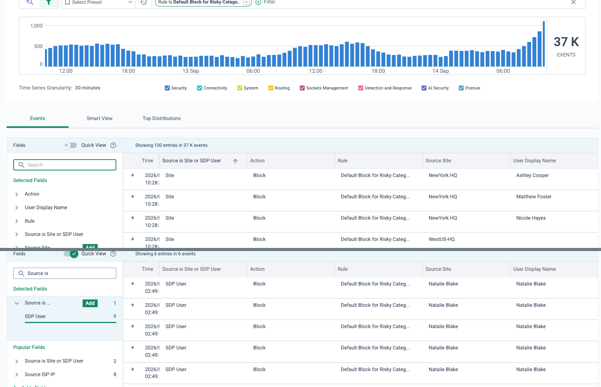

Why this matters
Security teams are asked to guarantee two things at once: visibility of everything happening on the network, and a central, policy-driven security posture that applies to any and every device and user. With an appliance estate that goal is structurally out of reach — policy lives in the boxes, and every box is a separate source of truth.
The objective of this use case is to demonstrate the converged alternative: consistent security — configured once, applied everywhere. One rulebase, built on user groups from the IdP and device-posture profiles, enforced in the cloud by every Cato PoP — so a user gets exactly the same protection at their desk in Glasgow, on hotel Wi-Fi in Dubai, or on their sofa at home.
Why security becomes inconsistent
The appliance-era estate
- Every site firewall carries its own rulebase and its own change history
- Remote users terminate on a separate VPN stack — with different rules
- Cloud workloads get yet another control set (NSGs, security groups)
- Software versions and threat signatures drift box by box
- Point solutions (SWG, IPS, CASB, DLP) each add their own policy plane
What that inconsistency costs
- Attackers only need to find the weakest enforcement point
- Every policy change multiplies by the number of devices that must receive it
- New sites and acquisitions go live with day-one exceptions "to be tidied later"
- Audits demand evidence per device instead of one answer for the estate
- Nobody can say with confidence what is actually enforced where
"Pick one rule — say, blocking uploads to personal cloud storage. Is it enforced identically for a user in your Glasgow office, the same user at home, and a colleague in Dubai? How long would it take you to prove that?"
Where this sits in the Cato SASE platform
- One policy set is defined once in the CMA and distributed to every PoP on the backbone.
- London DC, Glasgow, the Azure vSocket, Madrid and a home worker all cross the identical stack.
- Rules target IdP user groups and device-posture profiles, so a directory change alone changes access.
- A threat is stopped by the same IPS and Anti-Malware rules at whichever PoP it appears.
Configured once, applied everywhere
In Cato's architecture, policy is a cloud object, not a device configuration. The WAN Firewall, Internet Firewall, IPS, Anti-Malware, CASB and DLP policies are defined once in the Cato Management Application and enforced by the Single Pass Cloud Engine running in every PoP. Whichever PoP a site's socket or a user's client connects to, the full security stack and the identical rule set are already there — nothing is deployed, synced or patched at the edge.
Rules are written against IdP-driven user groups and device-posture profiles, not IP addresses. When HR moves someone between departments, the directory change alone changes their access — and applying ZTNA principles (least privilege, continuous verification) shrinks the threat landscape for every identity at once.

Key benefits
Reduce operational complexity
One rulebase in one console replaces per-device configs, change windows and version drift. A change is made once and it is simply the policy — everywhere.
IdP-driven policy membership
Rules target user groups synced from your identity provider. Joiners, movers and leavers are handled in the directory — access follows the identity automatically.
ZTNA principles shrink the threat landscape
Least-privileged access based on identity and device posture, verified continuously — the same zero-trust decision at a site, in the cloud, or from a home broadband line.
Consolidate SD-WAN and security point solutions
SD-WAN, NGFW, SWG, IPS, anti-malware, CASB and DLP converge in one cloud service — fewer vendors, fewer consoles, one place where policy lives.

How to run the demo
Ask how many devices a single policy change touches today, and how remote-user policy relates to site policy. The demo's punchline — one change, everyone covered — lands hardest when you can contrast it with their own numbers.
-
Show the global policy — and what's absent
Security → Internet Firewall
Walk the rulebase. Point out that rules are scoped to user groups and device-posture profiles, not devices or subnets — and that there is no per-site, per-appliance or per-region policy anywhere in the product. This is the policy, for everyone.
-
Show where membership comes from
Access → Users
Open a user such as Priya and show group memberships synced from the IdP. Move-the-user thought experiment: change her department in the directory and every rule referencing that group updates her access — no firewall change request raised.
-
Show the posture dimension
Access → Device Posture
Open a posture profile — EPP/EDR running, disk encryption, OS version — and show how the same profile is referenced by WAN and Internet rules. Identity says who; posture says from what; both are evaluated continuously.
-
Make one rule change, live
Security → Internet Firewall
Add or toggle a visible rule — for example, block a risky application category for a chosen user group — and save. That single change is now the enforced policy at every PoP. No push jobs, no device list, no maintenance window.
-
Prove it on a site AND a remote user
From a machine behind the Glasgow socket, hit the newly blocked resource — blocked. Then repeat as Priya on the Cato Client at home — blocked by the same rule, with zero per-device configuration on either path. This is the "configured once, applied everywhere" moment.
-
Demonstrate advanced threat protection — both paths
Trigger a harmless threat sample (e.g. an EICAR download) from the site and again from the remote user. Anti-Malware and IPS stop it at the PoP in both cases — same engines, same verdict, regardless of where the user sits.
-
Close on identity-attributed visibility
Monitor → Events
Filter events by the user's identity. Both blocks — office and home — appear side by side, attributed to the same rule and the same person. One policy, one audit trail, one answer for the auditor.
How to prove it in the customer's tenant
The demo shows consistency in our tenant; the PoV proves it in theirs — the same policy and the same inspection verdicts on a pilot site, a remote-user cohort and, where scoped, a cloud workload. Agree the success criteria below before configuring anything, per the frame in Running a Cato PoV: every criterion has a measurement, an evidence artefact and a place in the CMA where it will be read out.
| Success criterion | What we demonstrate | Evidence artefact | Where in the CMA |
|---|---|---|---|
| One rule, both paths | A single Internet Firewall block rule fires for traffic from the pilot site and from a Cato Client user — no second rulebase anywhere | Events filtered by the rule name showing a site source and an SDP-user source side by side | Monitor → Events |
| Identical threat verdicts | An EICAR-style safe test file is blocked by Anti-Malware with the same verdict on the site path and the client path | Two Anti-Malware block events (same file, different sources); Threats Dashboard entry | Monitor → Events · Monitor → Threats Dashboard |
| Global change in minutes | A published policy change reaches every PoP without a push job or a maintenance window | My Policy Changes showing 100% propagation, timestamped against the publish (Cato's stated average is under a minute) | Notifications (bell) → My Policy Changes |
| Identity on both paths | Events behind the site socket name the user — not just an IP — matching the attribution the Client gives remote users | Events for the same person from office and home, both carrying the user identity | Monitor → Events |
| Cloud workload parity (if in scope) | Egress from a vSocket site (e.g. an Azure hub) matches the same Internet Firewall rule as the branch and the client | A third event row for the same rule with the cloud site as source | Monitor → Events |
- Scope: one pilot branch socket plus a named client cohort (5–20 users). Add one vSocket site only if cloud parity is a written criterion.
- Licences: IPS and Anti-Malware active for the trial account; NG Anti-Malware if next-generation verdicts are in scope (it requires the base Anti-Malware service to be enabled).
- Identity: users provisioned from the IdP via Directory Services, and the Cato Client (with the Identity Agent) on pilot devices — this is what turns "an IP did this" into "Priya did this" behind the socket. See Identity Integration Design.
- TLS inspection: staged for the pilot cohort first, with the Cato root certificate deployed — HTTPS content verdicts (including the EICAR-over-HTTPS test) depend on it. Follow TLS Inspection: Staged Rollout Playbook, and clear the inspection scope with whoever owns privacy.
Configuration walkthrough
-
Pin the pilot scope and take the baseline
Network → Sites Access → Users
Confirm the pilot socket is up, the cohort is enrolled on the Client, and the IdP sync is populating the pilot group. Screenshot the topology and the group membership — dated — as evidence item zero.
-
Build the proof rule — monitor before block
Security → Internet Firewall
Add one rule scoped to the pilot user group against a visible, low-risk application category (gambling is the classic). Start it as Allow with Track = Event so a week of events proves who would be affected; flip the action to Block only once the hit pattern is understood. Rules match top-down and the rulebase ends in an implicit any-any allow — so place the rule above any broader allows, and remember that unmatched traffic passes.
-
Enable IPS — monitor first, per direction
Security → IPS
On the Protection Policy tab, set Outbound (and WAN if scoped) to Monitor — events are generated and traffic continues. Review a few days of events with the customer, then move to Block. Cato maintains the signatures; there is nothing to update at the site or on the client.
-
Enable Anti-Malware for the file verdicts
Security → Anti-Malware
Switch on Anti-Malware (and NG Anti-Malware where licensed). The engines scan HTTP, HTTPS and FTP transfers up to 100 MB — the same scan whichever path the file arrives on, which is exactly the property this PoV measures.
-
Stage TLS inspection where content verdicts matter
Security → TLS Inspection
Add an inspect rule scoped to the pilot cohort, keep the bypass rules for sensitive categories and certificate-pinned applications above it, and confirm the root certificate is on the pilot devices. Without inspection, the HTTPS variant of the EICAR test will download successfully — a useful before/after exhibit in itself.
-
Publish — and time the propagation
Notifications (bell) → My Policy Changes
Publish the revision and open My Policy Changes: it tracks the change until it has reached every relevant PoP, percentage by percentage. Cato's documentation states policy changes propagate on average in under a minute — screenshot the completed status with its timestamp against your publish time. That artefact is the "global change in minutes" criterion.
-
Run the two-path (or three-path) test
Monitor → Events
From a machine behind the pilot socket: hit the blocked category, then fetch the EICAR test file (Cato's KB documents both HTTP and HTTPS sources). Repeat both as a cohort user on the Client from home, and — if scoped — generate matching egress from the vSocket site. Filter Events by the rule name and by the user: every path shows the same rule, the same verdict and the same identity attribution.
What good output looks like



In Events, the money shot is one filter — the proof rule's name — returning rows whose sources differ (site, SDP user, vSocket site) while rule, action and verdict are identical. Pair it with the Threats Dashboard view of the EICAR detections and the My Policy Changes propagation record, and each success criterion has a dated artefact.
Troubleshooting
HTTPS test file downloads fine
The flow wasn't inspected. Check the TLS Inspection policy order (a bypass rule may catch it), confirm the root certificate is installed, and remember inspection is automatically bypassed for Android, Linux and unidentified operating systems.
An app broke after enabling TLSi
Certificate-pinned applications don't work when TLS inspection is active — that is expected, not a fault. Add a bypass rule for the pinned app and note it in the evidence doc as a scoped exclusion, not a failure.
Site events show an IP, not a name
User Awareness isn't attributing. Confirm users are provisioned via Directory Services and the Client's Identity Agent is enabled on office devices — it reports identity to the PoP roughly every 30 seconds. Until then, socket-side events stay anonymous.
The proof rule never fires
First match wins: an earlier, broader rule is swallowing the traffic — and browsers on QUIC can slip past TLS-based verdicts entirely, which is why the demo rulebase blocks QUIC apps and services so traffic falls back to inspectable TLS. Check rule order, then check for QUIC.
Geo rules look inconsistent
IPS Geo Restriction rules are not applied to traffic from Cato SDP Clients — so never use a geo rule as your consistency evidence. Prove parity with Internet Firewall, IPS protection and Anti-Malware verdicts instead.
A new IPS rule seems ignored
Cato's KB notes an IPS rule can take up to 10 minutes to become effective. Wait, retest, and only then start diagnosing — timing is the usual culprit in a live workshop.
Gotchas & clean exit
- Publishing is one-way: a published revision can't be un-published — record the before-state of any rulebase you touch, because unwinding means editing forward, not rolling back.
- Licence edges: NG Anti-Malware needs the base Anti-Malware service enabled, and disabling Anti-Malware disables NG with it — check the trial entitlements cover every engine on the criteria list.
- TLSi coverage is not universal: auto-bypassed operating systems and pinned-app exclusions mean "inspected everywhere" really means "inspected everywhere in the agreed inspect scope" — write the scope into the success criterion.
- Use safe test files only: EICAR-style samples from the KB-documented sources — never live malware — and clear the test with the customer's security team before running it on their estate.
Exit: at wrap-up, delete the proof rule, return IPS/Anti-Malware actions to their agreed end-state (block, if the PoV converts — that decision is the point), remove or re-scope the pilot TLS inspect rule, and publish once. The change history in Administration → Audit Trail remains as the record of everything the PoV added and removed — which is itself a closing exhibit: one console, one audit trail, one answer.